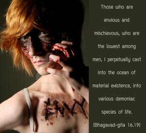
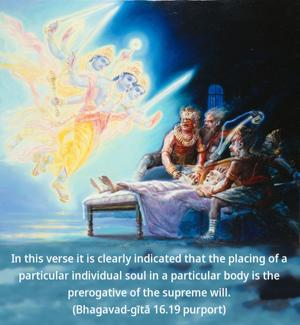
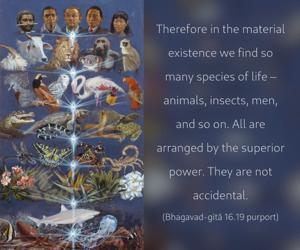

Those who are envious and mischievous, who are the lowest among men, I perpetually cast into the ocean of material existence, into various demoniac species of life.



In this verse it is clearly indicated that the placing of a particular individual soul in a particular body is the prerogative of the supreme will. The demoniac person may not agree to accept the supremacy of the Lord, and it is a fact that he may act according to his own whims, but his next birth will depend upon the decision of the Supreme Personality of Godhead and not on himself. In the Śrīmad-Bhāgavatam, Third Canto, it is stated that an individual soul, after his death, is put into the womb of a mother where he gets a particular type of body under the supervision of superior power. Therefore in the material existence we find so many species of life – animals, insects, men, and so on. All are arranged by the superior power. They are not accidental. As for the demoniac, it is clearly said here that they are perpetually put into the wombs of demons, and thus they continue to be envious, the lowest of mankind. Such demoniac species of men are held to be always full of lust, always violent and hateful and always unclean. The many kinds of hunters in the jungle are considered to belong to the demoniac species of life.